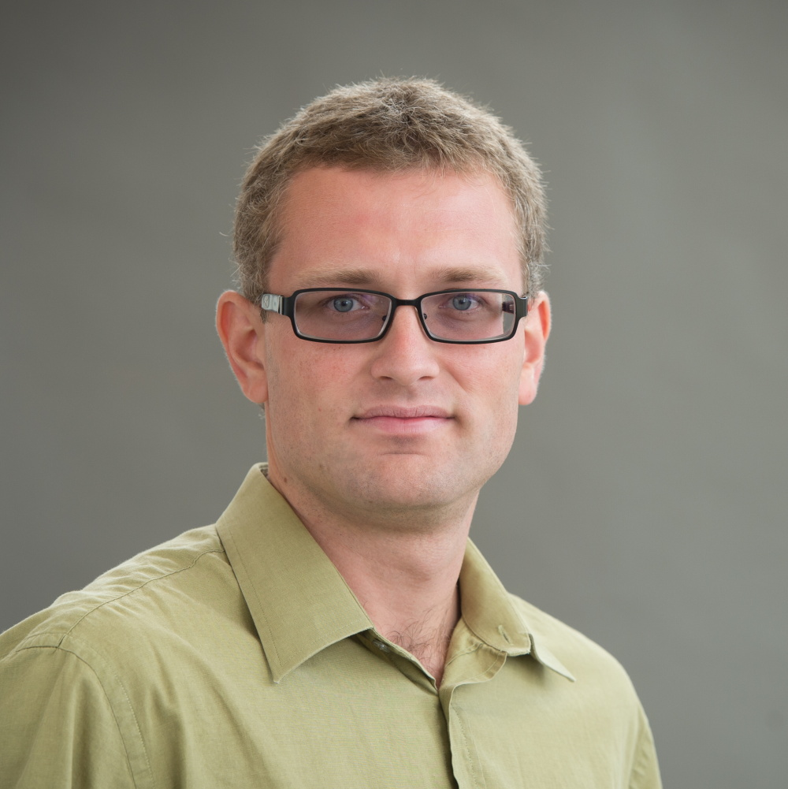
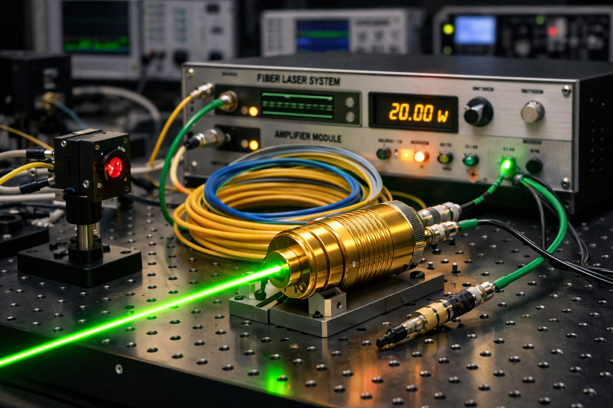
Designing, manufacturing, and characterizing fiber lasers, amplifiers, and amplified-spontaneour-emission sources emitting at wavelenghts between 1030 and 2090nm
Lasers implemented in large mode are fibers allow for generation of light with high average and peak powers and simultaneously high beam quality, which can be utilized for LIDAR applications and supercontimuum generation.
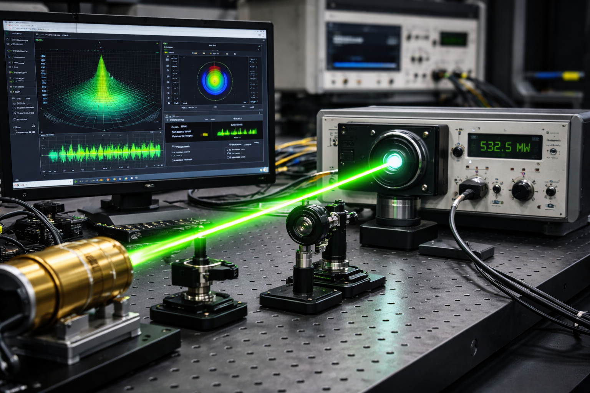
Developing and implementing techniques that enable for fast and reliable characterization of laser emission spectral and temporal features and beam quality.
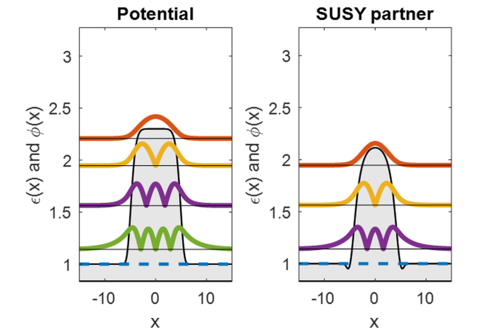
In particle physics, supersymmetry allows treatment of fermions and bosons on equal footing. Extended to optics, the concept of supersymmetry allows for creation of families of potentials with similar properties.
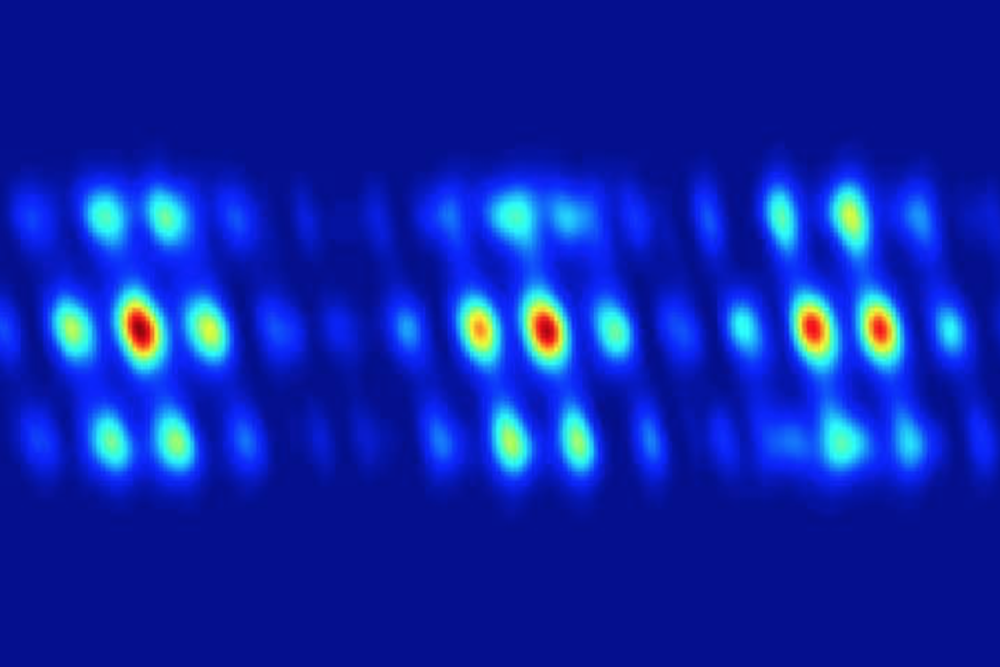
Paraxial optics is a perfect platform to study the parity-time symmetry where loss might be as important and desirable as gain. Parity-time symmetry enables non-reciprocal light transmission in optical systems.
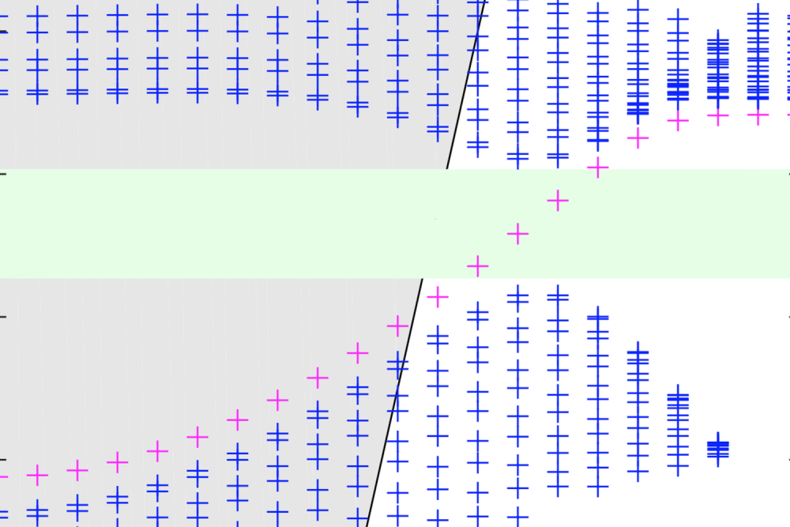
Topological insulators allow for current or light propagation uniquely at their interfaces in so called edge states. These states are immune to back-scattering and enable unidirectional energy transport.
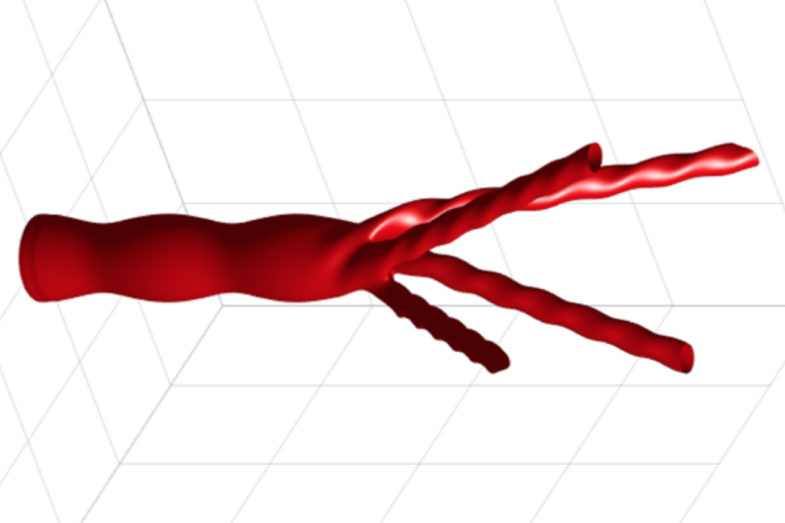
Light beams with unconventional distribution of phase and intensity enable efficient information transport in telecommunication, and particle manipulation in biological colloidal media. The most prominent example are optical vortices carrying orbital angular momentum.
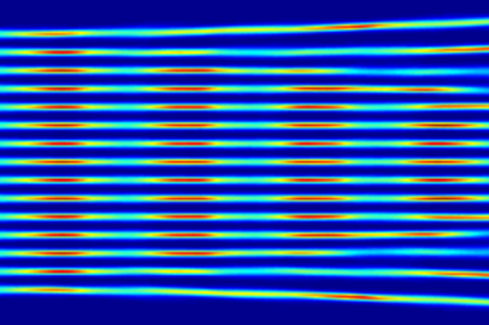
Filaments - light bullets propagating without diffraction - are formed by ultra-short high-energy light pulses propagating in nonlinear media and find application in remote sensing and lightning protection. Large arrays of such beams may allow for radar beam manipulation in the atmosphere.
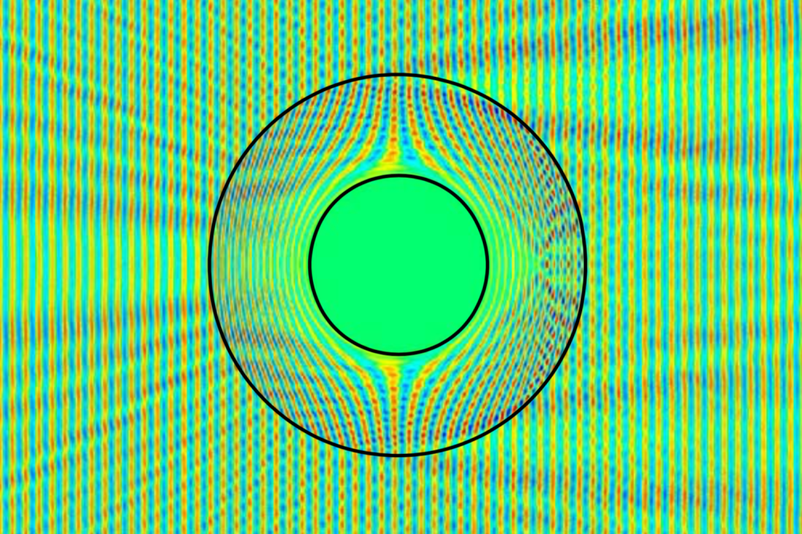
Man-made bulk materials and surfaces built of structural units much smaller than the wavelenght of light that enable unprecedented capbilities in molding of a light flow. Metamaterials pave the way towards invisibility cloaks, efficient beam control, and taylored nonlinearities.
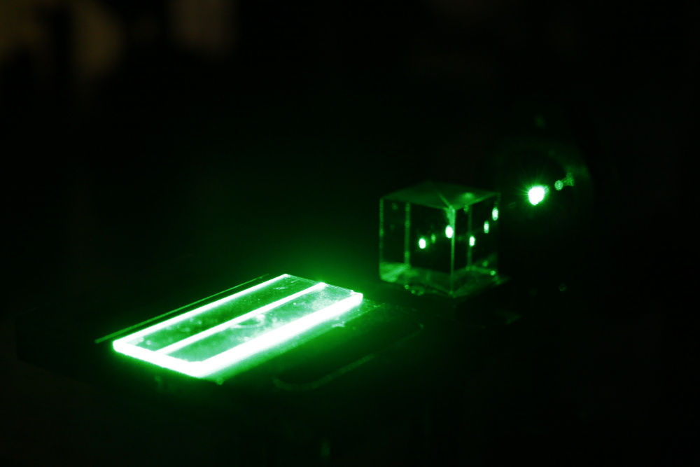
Under sufficiently intense irradiation, light itself affects material properties and therefore its own propagation. This phonomenon leads to such effects as generation of higher harmonics or saturable absorption.
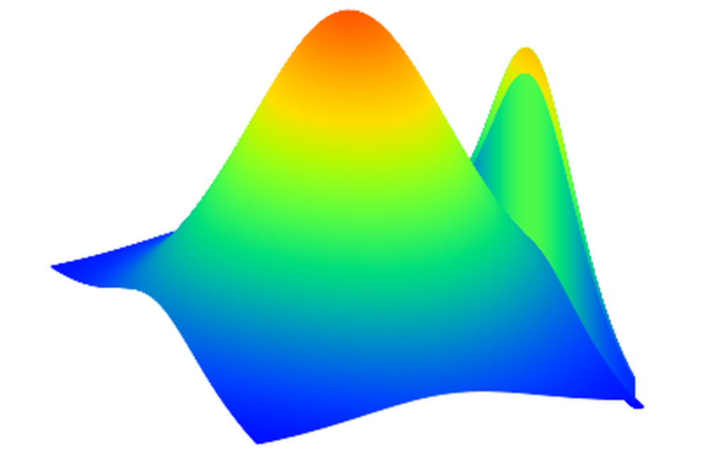
Light beams propagating at an interface between metal and nonlinear dielectric have an exotic mixture of properties of surface-plasmon polaritons and spatial solitons.
(2023-current)
Florham Park, NJ, United States of America
supervisors: Inuk Kang and Stephan Wielandy
(2020-2023)
Bethlehem, PA, United States of America
supervisor: Jean-Marc Delavaux
(2018-2020)
Electrical and Computer Engineering Department
Edmund T. Pratt School of Engineering
Durham, NC, United States of America
advisor: prof. Natalia M. Litchinitser
(2015-2018)
Electrical Engineering Department
Buffalo, NY, United States of America
advisor: prof. Natalia M. Litchinitser
(2012-2014)
Marseille, France
advisor: prof. Gilles Renversez
(2012-2014)
Institut of Photonic Sciences (ICFO)
Technical University of Catalonia
Castelldefels, Barcelona, Spain
advisor: prof. Yaroslav Kartashov
(2010-2012)
Écloe Normale Supérieure de Cachan
Currently part of Écloe Normale Supérieure Paris-Saclay
Cachan, Paris, France
(2007-2012)
Photonics, Technical Physics
Faculty of Fundamental Probelms of Technology
Wroclaw University of Science and Technology
Wroclaw, Poland
supervisor: prof. Antoni C. Mituś
Copyright © 2026 - All Rights Reserved - Wiktor Walasik